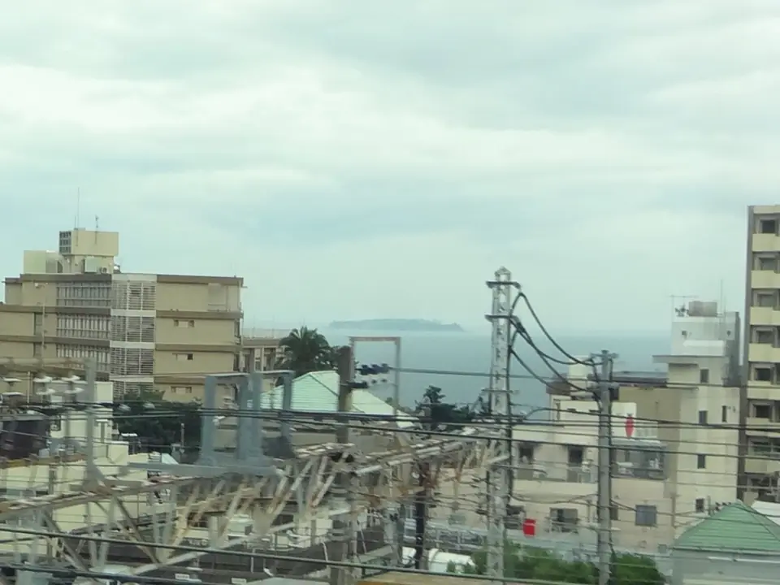
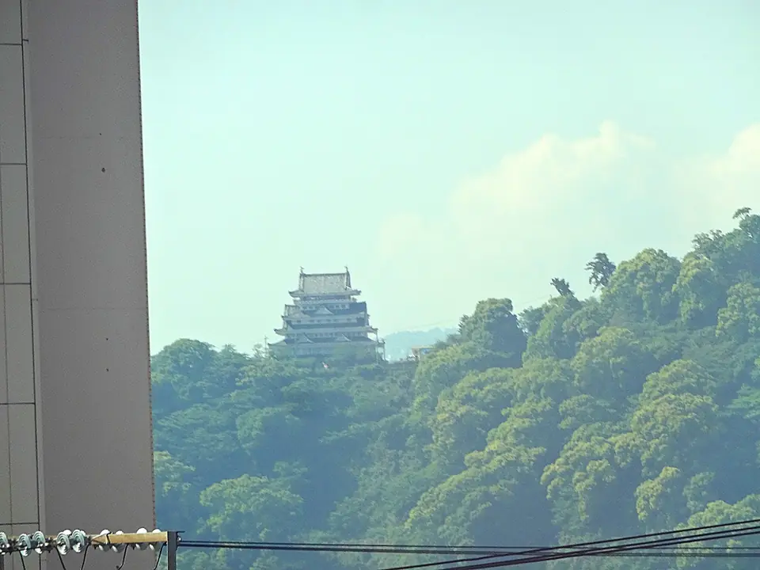

TOKAIDO SHINKANSEN WINDOW VIEW
熱海と相模湾はいつ見える？座席側は？
街の景色が、海の旅に切りかわる合図。

- 見える区間
- 小田原 → 熱海
- 座席側
- A席・海側
- タイミング
- 東京発のぞみ基準で約36分後
- 写真
- 3 枚
位置の目安
地図をひらくスポット位置と、新幹線から見る位置を切り替えられます。
熱海と相模湾の見つけ方
小田原を過ぎ、熱海が近づくころ、車窓は相模湾へ大きくひらきます。山肌の街、海、岬が一枚の絵になって、東京の街なみが「旅の景色」に変わる瞬間です。海側のA席をどうぞ。
東京から新大阪方面へ向かう場合は、小田原 → 熱海が近づいたらA席・海側の窓を少し早めに見てください。新大阪から東京方面へ向かう場合は、通過順が逆になります。
東海道新幹線の車窓としてのポイント
熱海と相模湾は、富士山だけではない東海道新幹線の車窓を楽しむための見どころです。列車の速度が速いため、見える時間は短く、天気や座席位置によって見え方が変わります。
写真で見る熱海と相模湾

